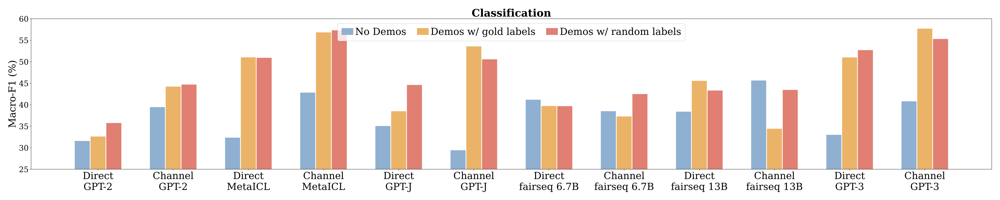
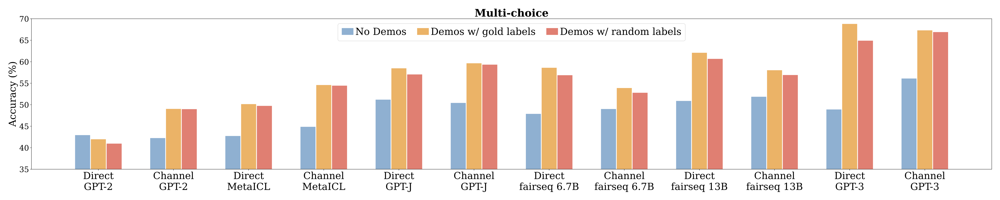
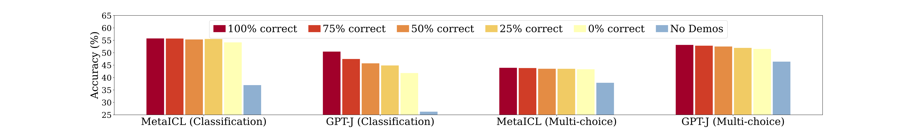
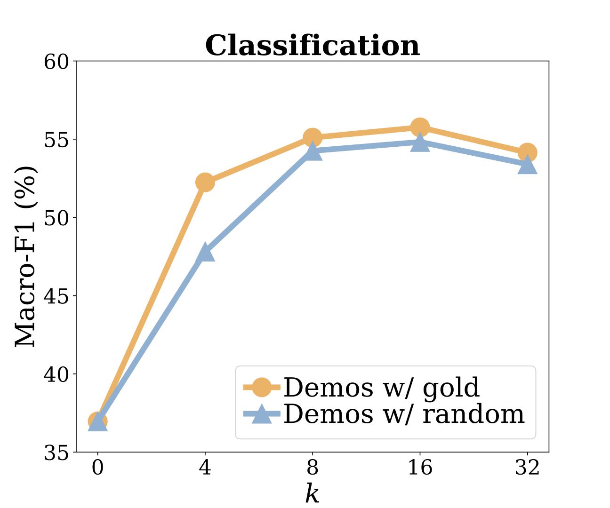
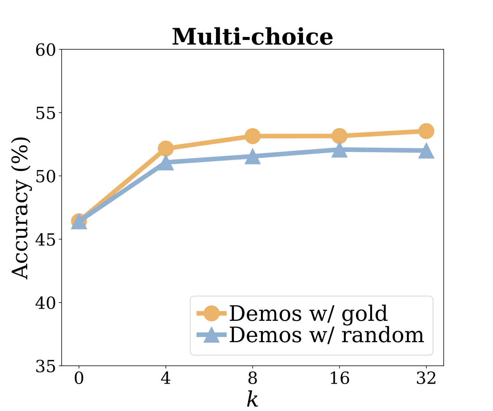
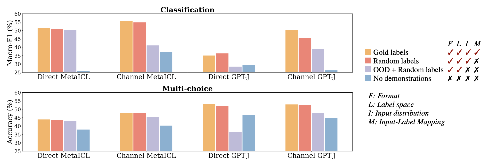
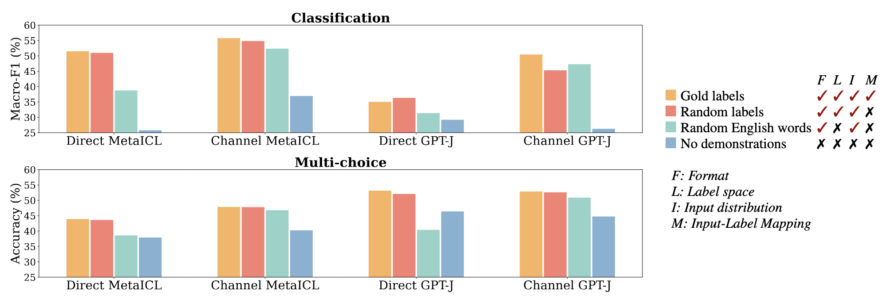

In-Context Learning (ICL)
Before diving into the details, let me review the ICL first. It is prompting method that make the model learn the task in inference time using demonstrations. The demonstrations are (human input, desired model output) pairs. Model learn what input will be inputted and how to generate the desired output.

Figure 1:Illustration of in-context learning from Dong et al.
In figure 1, the task is sentiment analysis and a few demonstrations are given. Model gets a sense of the task by observing review-sentiment pairs.

Figure 2: Informal vizualization to aid understanding. The true space refers to the space where the probability is 1 that the model outputs the gold answer. The space conditioned solely by instructions differs greatly from the true space, but with demonstrations, the corresponding space becomes much closer to the true space.
In figure 2, for easier understanding, I set the true space to the space where the probability is 1 that the model outputs the gold answer. The space conditioned solely by instructions differs greatly from the true space, but with demonstrations, the corresponding space becomes much closer to the true space. This means that both the instruction and instruction w/ demonstrations guide the model to learn the task. With demonstrations, the model is conditioned more precisely to the task.
Essential finding

Figure 3: ICL with ground-truth labels vs. ICL with incorrect labels.
To spark your interest, I share the most interesting finding of this paper. They find that ground-truth labels counter-intuitively are not necessary for in-context learning. A sufficient number of their experiments demonstrate this result. It is really interesting because ground-truth labels are very important in supervised learning.
Experimental Setup
Model : They use two inference methods direct* and channel* (Min et al.) on 6 decoder-only language models. The sizes vary from 774M to 175B. They include the largest dense LM (GPT-3 closed) and (fairest 13B open-sourced) at the time of conducting. experiments.
* Direct is a normal inferencemethod that model computes the likelihood of the label given the input.
* Channel is a method that model computes conditional probability of the given the label
Dataset : They evaluate on 26 datasets, including sentiment analysis, paraphrase detection, natural language inference, among others, from the well-studied benchmark GLUE. They cover diverse domains including science, finance and more. All of datasets are classification and multi-choice formats. They can more easily define input-label correspondence compared to free-form generation tasks.
The model doesn't understand input-label correspondence
To find out the impact of correctly-paired demonstrations, they compare the following three methods.
No demonstrations is a zero shot setting. The prediction is output via argmaxy ∈ CP(y|x) where x is the user query and C is the set of candidate labels.
Demonstrations w/ gold labels are typical in-context learning method with k labeled examples (x1, y1) … (xk, yk). A concatenation of k pairs is used to make a prediction via argmaxy∈C P(y|x1, y1, …, xk, yk, x).
Demonstrations w/ random labels are few shot setting with k random labeled examples. Each (xi) is paired with (ỹi) that is randomly sampled from C. A concatenation of (x1, ỹ1, …, xk, ỹk, x) is used to make a prediction via argmaxy∈C P(y|x1, ỹ1, …, xk, ỹk, x).


Figure 4: Results when using no-demonstrations, demonstrations with gold labels, and demonstrations with random labels in classification tasks and multi-choice tasks. Model performance with random labels is very close to performance with gold labels. Min et al.
The figure 4 shows that the model performance with random labels is very close or slightly worse than the performance with gold labels. It shows that the existence of demostrations is helpful but the gold-label demonstrations are not necessary.
They conducted various ablation studies to strengthen the hypothesis that gold-label demonstrations are not necessary.

Figure 5: Results with varying number of correct labels in the demonstrations. Min et al.
They conducted ablation study with varying percentage of correct labels, specifically at 100%, 75%, 50% and 0%. Figure 5 shows that model performance is insensitive to this ablation. The interesting point this study gives is using incorrect labels always outperforms using no demonstrations (zero-shot).


Figure 6: Results with varying number of demonstrations (k). Models that are the best in each task category (Channel MetaICL and Direct GPT-J, respectively) are used. Min et al.
They also conducted ablation study with varying number of demonstrations (k), specifically at 0, 4, 8, 16 and 32. The results are shown in Figure 6.
The performance gap between them is in the range of 0.8%-1.6%.
In k < 8, model performance increases significantly as k increases regardless of the correctness of demonstrations. In k ≥ 8, no additional performance gain is observed as k increases.
They hypothesize that the larger labeled data is beneficial mainly for supervising the input-label correspondence. Other components like the example inputs, example outputs and output format could be learned only using small demonstrations. So even though they increase k at most 32, model doesn't learn input-label correspondence perfectly and no more performance increase is observed.
Other aspects of Demonstrations
They also examined other aspects of demonstraions that affect the model's performance of in-context learning. They identify four factors including input-label mapping we previously discussed, the distribution of the input text, the label space, and others. Let's see other factors.
The distribution of the input text: Underlying distribution that xi ... xk are from.

Figure 7: Impact of the distribution of the inputs. Min et al.
They experiment with out-of-distribution (OOD) inputs instead of texts in unlabeled training data. OOD sentences are randomly sampled from external corpus.
Using OOD inputs significantly drops the performance when Channel MetaICL, Direct GPT-J and Channel GPT-J are used. In the case of Direct GPT-J, using OOD is even worse than using no demonstrations.
This suggests that the distribution of the input text is an important factor for performance gains.
Let's think about the process of training language model. LM always conditioned on the in-distribution text during training. So, in-distribution text makes the task closer to language modeling.
The label space: The space covered by the labels (y1, ... yk).

Figure 8: Impact of the label space. Min et al.
With direct models, the performance gap between using random labels within the label space and using random English words is significant. It means that knowing the label space contributes to the performance gains. We could get a sense on conditional probability of direct method. The model prediction is based on P(y|x1, y1, …, xk, yk, x). It needs to predict the target label, so if the model is conditioned on the wrong label, its performance drops.
With channel models, the performance gap between using random labels within the label space and using random English words is in range of 0-2%. The model prediction is based on P(x|x1, y1, …, xk, yk, y). It functions by predicting the input in terms of the label rather tan predicting a label. So. the importance of knowing label space is relatively lower than that of direct models.
Limitations
The evaluation tasks they used have the same property that the input is real natural language text, e.g., sentiment analysis and paraphrase detection. And the output is a single label, e.g., positive or negative. Maybe the model doesn't need to understand the input-label correspondence to predict well. Other tasks with more limited inputs that require more complex understanding may use the ground-truth labels more.
This paper report macro-level analysis using the average performance across all tasks. We can't identify whether the model really use the specific aspects of demonstrations or not. And the model's thought process to predict the output
All of experiments are classification and multi-choice tasks, further research on other tasks is needed to verify the generalization of the results.Reference
Min, S., Lyu, X., Holtzman, A., Artetxe, M., Lewis, M., Hajishirzi, H., & Zettlemoyer, L. (2022). Rethinking the role of demonstrations: What makes in-context learning work?. arXiv preprint arXiv:2202.12837.
Min, S., Lewis, M., Hajishirzi, H., & Zettlemoyer, L. (2021). Noisy channel language model prompting for few-shot text classification. arXiv preprint arXiv:2108.04106.
Min, S., Lewis, M., Zettlemoyer, L., & Hajishirzi, H. (2021). Metaicl: Learning to learn in context. arXiv preprint arXiv:2110.15943.
Brown, T. B. (2020). Language models are few-shot learners. arXiv preprint arXiv:2005.14165.
Dong, Q., Li, L., Dai, D., Zheng, C., Ma, J., Li, R., ... & Sui, Z. (2022). A survey on in-context learning. arXiv preprint arXiv:2301.00234.
Learn more here: [ paper ]